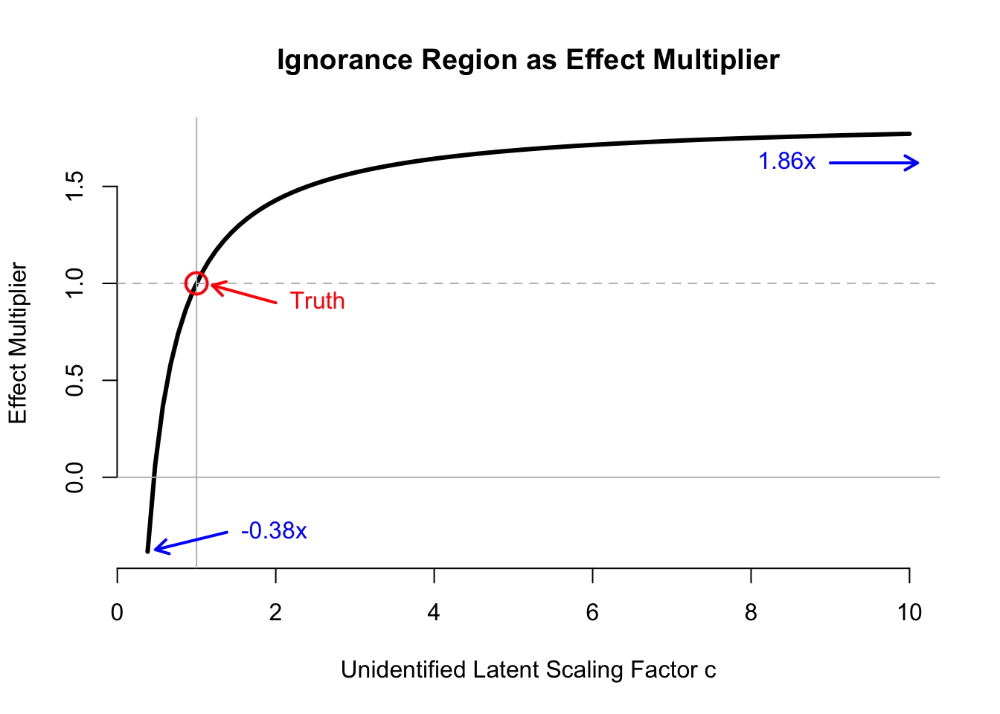

Updated 2018/06/09.
Note: This post was motivated by recent drafts of several papers about causal inference from observational data when there are multiple causes or treatments being assessed and there is unobserved confounding.
- Tran and Blei, 2017. Implicit Causal Models for Genome-wide Association Studies. (https://arxiv.org/abs/1710.10742)
- Wang and Blei, 2018. Blessings of Multiple Causes (https://arxiv.org/abs/1805.06826)
- Ranganath and Perotte, 2018. Multiple Causal Inference with Latent Confounding (https://arxiv.org/abs/1805.08273)
These papers explore a setting that departs from the standard “single cause” setting that is widely studied in the causal inference literature, and therefore make a significant contribution. The problems that I highlight below aren’t fatal for the results in these papers, but they do imply that the results need stronger conditions than those presented in the initial drafts. I reached out to the papers’ authors and have had some great, collaborative discussions.
Goal: Exploring Identification
The general goal of this technical note is to highlight an essential gap between predictive and causal inference. We consider the problem of identification, which is a central issue in causal inference that does not arise in predictive inference. The causal parameters in a problem are identified if the causal parameters that could generate the observable data are unique.
If the causal parameters are identified, then they can be estimated if the distribution of the observable data can be estimated. However, if the parameters are not identified, then even if the distribution of the observable data can be estimated perfectly, the causal parameters cannot be estimated consistently. Instead, even with infinite data, we can only obtain an ignorance region of parameter values to which the observed data give equal support. Less formally, even with infinite data, there will be many causal explanations of the observed data that cannot be distinguished on the basis of the data alone. Often these competing explanations will have different implications for downstream decisions.
Identification is a property of the data-generating process, not a property of the estimation method. Thus, identification problems cannot be addressed by changing the estimation methodology. Resolving identification issues requires changing the data generating process (e.g., running an experiment), adopting assumptions about the data generating process that are untestable in the data alone (e.g., conditional independences between observable and unobservable quantities), or choosing different causal parameters to estimate. Alternatively, it is possible to proceed with set identified parameters, so long as the ignorance region does not contain causal parameter values that would change downstream decisions.
Latent Confounder Model with Multiple Treatment Factors
Structural Model
Consider a problem where we want to assess the causal effect of \(m\) “treatments” \(X = (X_1, \ldots, X_m)\) (say, SNP’s) on a single outcome Y, but there is a latent confounder \(Z\). Assume that, conditional on \(Z\), each the treatments \(X\) are mutually independent of each other. We will assume that \(X\), \(Y\), and \(Z\) all have mean zero. Our general goal is to understand the mechanistic relationship between \(X\) and \(Y\) (a notion that’s explained nicely in this post by Ferenc Huszár).
Here, we consider a very simple model of latent confounding and provide a counter-example to the claim that one can, in general, construct a consistent estimate of the structural relationship between \(Y\) and \(X\) in this setting. We consider an extremely simple setting, where all variables are linearly related, and all independent errors are Gaussian. Letting \(\epsilon_{w} \sim N(0, \sigma^2_w)\) for each \(w \in \{X, Y, Z\}\), the structural equations for this setting are \[ \begin{align} Z &:= \epsilon_Z\\ X &:= \alpha' Z + \epsilon_X\\ Y &:= \beta'X + \gamma Z + \epsilon_Y \end{align} \] Here, \(\alpha, \beta\) are \(m \times 1\) column vectors, and \(\gamma\) is a scalar; \(\epsilon_X\) is a \(m \times 1\) random column vector, and \(\epsilon_Y, \epsilon_Z\) are random scalars. Under this model, our goal is to estimate the parameter vector \(\beta\).
The covariance matrix can be written as \[ \Sigma_{XYZ} = \pmatrix{ \Sigma_{ZZ} &\Sigma_{ZX} &\Sigma_{ZY}\\ \Sigma_{XZ} &\Sigma_{XX} &\Sigma_{XY}\\ \Sigma_{YZ} &\Sigma_{YX} &\Sigma_{YY}} \] where \(\Sigma_{XX}\) is \(m \times m\), \(\Sigma_{XY} = \Sigma{YX}'\) is \(m \times 1\), and \(\Sigma_YY\) is \(1 \times 1\).
The marginal covariance matrix of the observable variables \((X,Y)\) is the bottom-right \(2 \times 2\) sub-matrix of this matrix. Its entries are defined by: \[ \begin{align} \Sigma_{XX} &= \alpha \alpha'\sigma^2_Z + \operatorname{diag}(\sigma^2_X)\\ \Sigma_{XY} &= \Sigma_{XX}\beta + \gamma \sigma^2_Z \alpha\\ \Sigma_{YY} &= (\beta'\alpha + \gamma)^2 \sigma^2_Z+ \beta' \operatorname{diag}(\sigma^2_X)\beta + \sigma^2_Y \end{align} \] In these equations, the quantity on the LHS is observable, while the structural parameters on the RHS are unobservable. The goal is to invert these equations and obtain unique values for the structural parameters.
When \(m \geq 3\), the number of equations exceeds the number of unknonws, but there still exists a family of structural equations with parameters \[(\alpha_1, \beta_1, \gamma_1, \sigma^2_{Z,1}, \sigma^2_{X,1}, \sigma^2_{Y,1}) \neq (\alpha, \beta, \gamma, \sigma^2_Z, \sigma^2_X, \sigma^2_Y)\] that induce the same observable covariance matrix. These parmeterizations cannot be distinguished by observed data. I’ll call these observation-equivalent parameterizations.
In this problem, we really only care about \(\beta\), the vector of parameters that describes the functional relationship between \(X\) and \(Y\). If all observation-equivalent parameterizations kept \(\beta\) fixed, but differed in the other parameter values, we would say that \(\beta\) is identified even though the full set of structural parameters is not. However, we will show below that there is a class of observation-equivalent parameterizations that allow \(\beta\) to take different values while still perfectly explaining the observed data: \[ \beta_1 \neq \beta. \]
Observation-Equivalent Construction
We will consider the observation-equivalent parameterizations where: \[ \gamma_1 := \gamma\\ \sigma^2_{X,1} := \sigma^2_{X} \]
The key to this argument is that the scale of \(Z\) is not identified given \(X\), even when \(m \rightarrow \infty\). This is a well-known non-identification result in confirmatory factor analysis (e.g, Bollen 1989, Chapter 7). We can see this in our example because the expression for \(\Sigma_{XX}\) does not change when \(\alpha\) and \(\sigma^2_Z\) are replaced with the structural parameters \(\alpha_1\) and \(\sigma^2_{Z,1}\): \[ \begin{align} \alpha_1 &:= c \cdot \alpha\\ \sigma^2_{Z,1} &:= \sigma^2_{Z} / c^2 \end{align} \]
Under this perturbation, we will find a set of parameter values \(\beta_1\) that satisfy the \(\Sigma_{XY}\) equation. We will write \(\beta_1 := \beta + \Delta_\beta\)
\[ \Sigma_{XX} \beta + \gamma \sigma^2_Z \alpha = \Sigma_{XX} \beta_1 + \gamma_1 \sigma^2_{Z,1}\alpha_1 \\ \Rightarrow \Sigma_{XX} \beta + \gamma \sigma^2_Z \alpha = \Sigma_{XX} \beta_1 + \gamma \sigma^2_{Z}\alpha/c\\ \Rightarrow \Delta_{\beta}(c) := \beta_1 - \beta = \Sigma_{XX}^{-1}\alpha \cdot \gamma\sigma^2_Z\left(1-\frac{1}{c}\right) \] \(\beta\) can be shifted in the direction of \(\Sigma_{XX}^{-1}\alpha\).
Valid values of \(c\) are constrained by the variance equation. In particular, we just require that \(\sigma^2_{Y,1}\) be positive:
\[ \begin{equation} 0 < \sigma^2_{Y,1} = (\beta'\alpha + \gamma)^2 \sigma^2_Z - (\beta_1'\alpha_1 \cdot c+ \gamma_1)^2\sigma^2_Z / c + \beta' \operatorname{diag}(\sigma^2_X)\beta - \beta'_1\operatorname{diag}(\sigma^2_X)\beta_1 + \sigma^2_Y \end{equation} \]
To summarize, for any fixed vector of parameters \((\alpha, \beta, \gamma, \sigma^2_Z, \sigma^2_X, \sigma^2_Y)\) and any valid scaling factor \(c\), there exists a vector of parameters that induces the same observeable data distribution. \[\begin{align} \alpha_1 &= c \cdot \alpha\\ \beta_1 &= \beta + \Sigma_{XX}^{-1}\alpha \cdot \gamma\sigma^2_Z\left(1-\frac{1}{c}\right)\\ \gamma_1 &= \gamma\\\\ \sigma^2_{Z,1} &= \sigma^2_Z / c^2\\ \sigma^2_{X,1} &= \sigma^2_X\\ \sigma^2_{Y,1} &= (\beta'\alpha + \gamma)^2 \sigma^2_Z - (\beta_1'\alpha_1 \cdot c+ \gamma_1)^2\sigma^2_Z / c + \beta' \operatorname{diag}(\sigma^2_X)\beta - \beta'_1\operatorname{diag}(\sigma^2_X)\beta_1 + \sigma^2_Y \end{align}\]We call the set of all such parameter vectors the ignorance region in the parameter space because there is no information in the observable data distribution to distinguish between the parameter vectors in this region. They are all equally plausible causal explanations of the observed data.
Example of Asymptotic Behavior
The ignorance region does not in general disappear in the large sample (large-\(n\)) or large treatment number (large-\(m\)) limits. To see this for the large-\(n\) limit, note that we have constructed the ignorance region above from population quantities, not sample quantities, so the calculations in the previous section already take place in the infinite-data limit. For the large-\(m\) limit, we construct a simple example here where the ignorance region maintains the same (multiplicative) size even as \(m\) goes to infinity.
\(Y\) here is a scalar outcome, the \(m\)-vector \(X\) is a set of treatments, and the latent variable \(Z\) is some background characteristic that drives both treatments and outcomes. In many applications, we expect the limit where \(m \rightarrow \infty\) to be representative of what might occur in a real data analysis problem. This motivates our asymptotic setup, where we consider a sequence of problems where the number of treatments analyzed in each problem is increasing in the sequence. Each problem has its own DGP, with some structural parameters indexed by \(m\): \((\alpha_m, \beta_m, \gamma, \sigma^2_Z, \sigma^2_{X,m}, \sigma^2_Y)\). We keep the scalar parameters not indexed by \(m\) fixed.
We will consider the marginal variance of each \(X\) to be fixed, so for some fixed scalar \(s^2_0\), for each problem \(m\), \[ \sigma^2_{X,m} =\mathbb{1}_{m\times 1} s^2_0. \]
Likewise, we expect the marginal variance of \(Y\) to be relatively stable, no matter how mwny treatments we choose to analyze. Given our setup, this means that if the number of treatments is large, the effect of each individual treatment on average needs to become smaller as \(m\) grows large, or else the variance of \(Y\) would increase in \(m\) (this is clear from the specification of \(\Sigma_{YY}\)). To handle this, we fix some constant scalars \(a_0\) and \(b_0\) assume that, for problem \(m\), \[ \alpha_m = \mathbb{1}_{m\times 1} \cdot a_0 / \sqrt{m};\quad \beta_m = \mathbb{1}_{m\times 1} \cdot b_0 / \sqrt{m}. \]
Thus, as \(m \rightarrow \infty\), the norm of \(\alpha_m\) and the inner product \(\alpha_m' \beta_m\), which appear in the expression for the marginal variance of \(Y\), \(\Sigma_{YY}\), remain fixed.
Note: This is not the only way to maintain stable variance in \(Y\) as \(m\) increases. In particular, one could specify the sequence of coefficients \(\alpha^{(k)}\) for each subsequent treatment added to the analysis if one wanted to model the case where an investigator is sequentially adding SNP’s from the same underlying DGP. Our setup here is simpler.
Under this setup, the interval of valid values for the latent scaling factor \(c\) remains fixed for any value of \(m\), because this interval only depends on inner products and norms of \(\alpha\) and \(\beta\) vectors. Thus, we can fix \(c\) at some valid in this interval, and examine how the corresponding shift vector \(\Delta_{\beta, m}(c)\) behaves as \(m\) grows large. The components of the shift \(\Delta_{\beta, m}(c)\) scale as \(m^{-1/2}\). \[ \begin{align} \Delta_{\beta,m}(c) &= \Sigma_{XX}^{-1}\alpha_m \cdot \gamma\sigma^2_Z\left(1-\frac{1}{c}\right)\\ &= m^{-1/2} \cdot\mathbb{1}_{m\times 1} \cdot a_0 \cdot \gamma \sigma^2_Z\left(1 - \frac{1}{c}\right) \end{align} \] Recall that the true parameters \(\beta_m\) also scale as \(m^{-1/2}\). In particular, the magnitude of the shift relative to the true parameters remains fixed in \(m\). \[ \frac{\Delta_{\beta, m}(c)}{\beta_m} = \mathbb{1}_{m\times 1} \cdot \frac{a_0}{b_0} \cdot \gamma \sigma^2_Z\left(1 - \frac{1}{c}\right) \]
Thus, even as \(m \rightarrow \infty\), there is no identification, even asymptotically. We cannot distinguish between the true value of the treatment effect vector \(\beta\) from vectors in a fixed region surrounding the true \(\beta\).
Simulation
The code in this section is a little raw. If you’d like the punch line to the simulation, you can scroll down to the figure at the end of the section.
Constructing the Ignorance Region for \(\beta\)
We demonstrate the above example in simulation. We set up the parameters here. We will show in this simulation that the same observed data distribution can be compatible with causal effects of highly variable magnitudes, and of opposite sign.
# Start with 10 treatments
m <- 10
a_0 <- 2
b_0 <- 1
s2X <- 2
# Scale coefficients so that the variance of Y stays fixed even as m grows.
alpha <- rep(a_0, m) / sqrt(m)
beta <- rep(b_0, m) / sqrt(m)
gamma <- 2
sigma2_Z <- 3
sigma2_X <- rep(s2X, m)
sigma2_Y <- 10
# Number of samples to generate to show that the population calcs are right.
N <- 1e5Some functions for generating data and summaries.
# Function for generating data. Structural model.
gendat2 <- function(N, alpha, beta, gamma, sigma2_Z, sigma2_X, sigma2_Y){
m <- length(alpha)
Z <- rnorm(N, 0, sqrt(sigma2_Z))
Zvec <- rep(Z, each=m)
X <- matrix(rnorm(m * N, alpha*Zvec, sqrt(sigma2_X)), nr=m)
Y <- colSums(as.vector(beta) * X) + gamma * Z + rnorm(N, 0, sqrt(sigma2_Y))
list(Z = Z, X = X, Y = Y)
}
# Function for generating covariance matrix from structural parameters
make_covmat <- function(alpha, beta, gamma, sigma2_Z, sigma2_X, sigma2_Y){
XX_theory <- alpha %*% t(alpha) * sigma2_Z + diag(sigma2_X)
YY_theory <- (t(beta) %*% alpha + gamma)^2 * sigma2_Z + t(beta) %*% diag(sigma2_X) %*% beta+ sigma2_Y
XY_theory <- XX_theory %*% beta + sigma2_Z * gamma * alpha
Sigma_theory <- rbind(cbind(XX_theory, XY_theory), c(as.vector(XY_theory), YY_theory))
Sigma_theory
}Demonstrate data generation. Show that the empirical covariance in large samples matches the theoretical covariances from the structural model. We’ll only print the lower right corner, since that’s the interesting part.
mmdat <- gendat2(N, alpha, beta, gamma, sigma2_Z, sigma2_X, sigma2_Y)
{cat("Empirical Covariance:\n")
print(cov(cbind(t(mmdat$X), mmdat$Y))[(m-1):(m+1), (m-1):(m+1)])}## Empirical Covariance:
## [,1] [,2] [,3]
## [1,] 3.206647 1.216900 8.307102
## [2,] 1.216900 3.197283 8.279054
## [3,] 8.307102 8.279054 60.437776# Theoretical covariance matrix from structural model
XX_theory <- alpha %*% t(alpha) * sigma2_Z + diag(sigma2_X)
XY_theory <- XX_theory %*% beta + sigma2_Z * gamma * alpha
YY_theory <- (t(beta) %*% alpha + gamma)^2 * sigma2_Z + t(beta) %*% diag(sigma2_X) %*% beta+ sigma2_Y
Sigma_theory <- rbind(cbind(XX_theory, XY_theory), c(as.vector(XY_theory), YY_theory))
{cat("Theoretical Covariance:\n")
print(Sigma_theory[(m-1):(m+1), (m-1):(m+1)])}## Theoretical Covariance:
## [,1] [,2] [,3]
## [1,] 3.200000 1.200000 8.221922
## [2,] 1.200000 3.200000 8.221922
## [3,] 8.221922 8.221922 60.000000Construct extreme versions of the shift. Find scaling factors \(c\) that are at the endpoints of the valid interval. Here, it turns out that the upper endpoint of the interval is \(\infty\), so substitute in 1000.
# HAAAAAAAAACK: Need to run in environment set up by previous block
check_cc <- function(cc, deets=FALSE){
# alpha, beta, gamma, sigma2_Z, sigma2_X, sigma2_Y, XX_theory, YY_theory inherited
# Construct parameters corresponding to scaling by cc
alpha1 <- alpha * cc
gamma1 <- gamma
beta1 <- beta + sigma2_Z * gamma * (1 - 1 / cc) * solve(XX_theory) %*% alpha
sigma2_X1 <- sigma2_X
sigma2_Z1 <- sigma2_Z / cc^2
# Compute implied variance of Y residual. This must be positive for cc to be valid.
sigma2_Y1 <- YY_theory - ((t(beta1) %*% alpha1 + gamma1)^2 * sigma2_Z1 +
t(beta1) %*% diag(sigma2_X1) %*% beta1)
if(deets){
return(list(cc=cc, beta1=beta1, sigma2_X1=sigma2_X1, sigma2_Z1=sigma2_Z1, sigma2_Y1=sigma2_Y1))
} else {
sigma2_Y1
}
}
## Find extreme values of `cc` that satisfy the positive variance condition.
#hi <- uniroot(check_cc, interval=c(1,100), tol=1e-18)$root
lo <- uniroot(check_cc, interval=c(0.01,1), tol=1e-18)$root
# Grab parameters corresponding to these
hi_par <- check_cc(1000, TRUE)
lo_par <- check_cc(lo, TRUE)
# Check our work. Construct covariance matrices under the extreme shift.
# Compare to original covariance matrix.
Sigma_hi <- make_covmat(alpha * hi_par$cc, hi_par$beta1, gamma, sigma2_Z / hi_par$cc^2,
sigma2_X, hi_par$sigma2_Y1)
{cat("Theoretical Covmat from High-End Shift:\n")
print(Sigma_hi[(m-1):(m+1), (m-1):(m+1)])}## Theoretical Covmat from High-End Shift:
## [,1] [,2] [,3]
## [1,] 3.200000 1.200000 8.221922
## [2,] 1.200000 3.200000 8.221922
## [3,] 8.221922 8.221922 60.000000# Double-check. Show that generated data has similar empirical covariance matrix.
mmdat1 <- gendat2(N, alpha * hi_par$cc, hi_par$beta1, gamma,
sigma2_Z / hi_par$cc^2, sigma2_X, hi_par$sigma2_Y1)
{cat("Empirical Covmat from High-End Shift:\n")
print(cov(cbind(t(mmdat1$X), mmdat1$Y))[(m-1):(m+1), (m-1):(m+1)])}## Empirical Covmat from High-End Shift:
## [,1] [,2] [,3]
## [1,] 3.166395 1.208071 8.161384
## [2,] 1.208071 3.186150 8.184519
## [3,] 8.161384 8.184519 59.631577# Do the same for the low-end of cc.
Sigma_lo <- make_covmat(alpha * lo_par$cc, lo_par$beta1, gamma, sigma2_Z / lo_par$cc^2,
sigma2_X, lo_par$sigma2_Y1)
{cat("Theoretical Covmat from Low-End Shift:\n")
print(Sigma_lo[(m-1):(m+1), (m-1):(m+1)])}## Theoretical Covmat from Low-End Shift:
## [,1] [,2] [,3]
## [1,] 3.200000 1.200000 8.221922
## [2,] 1.200000 3.200000 8.221922
## [3,] 8.221922 8.221922 60.000000mmdat1 <- gendat2(N, alpha * lo_par$cc, lo_par$beta1, gamma,
sigma2_Z / lo_par$cc^2, sigma2_X, lo_par$sigma2_Y1)
{cat("Empirical Covmat from Low-End Shift:\n")
print(cov(cbind(t(mmdat1$X), mmdat1$Y))[(m-1):(m+1), (m-1):(m+1)])}## Empirical Covmat from Low-End Shift:
## [,1] [,2] [,3]
## [1,] 3.199997 1.197232 8.214701
## [2,] 1.197232 3.197650 8.223035
## [3,] 8.214701 8.223035 60.271536Examine the extreme parameter estimates:
res <- rbind(c(beta[1], hi_par$beta1[1], lo_par$beta1[1]),
c(1, hi_par$beta[1] / beta[1], lo_par$beta1[1] / beta[1]))
rownames(res) <- c("Beta Component Value", "Percent of Truth")
colnames(res) <- c("True", "High Shift", "Low Shift")
res## True High Shift Low Shift
## Beta Component Value 0.3162278 0.5870091 -0.1212682
## Percent of Truth 1.0000000 1.8562857 -0.3834839The ignorance region includes an over-estimate of the causal effect by \(1.8\times\), and estimates of the causal effect of opposite sign. Thus, even if we could characterize the observed data distribution exactly (including methods that construct a latent representation to explain the observed data), we would have almost no information about the causal process of interest.
Below, we plot the ignorance region in terms of the effect multiplier, indexing the multiplier by the unidentified scaling factor \(c\). (Code is hidden, but included in the function in the next section.) 
Ignorance Region for \(\beta\) as \(m\) Grows Large
Wrap up above calculations in a function.
compute_ignorance <- function(m, a_0, b_0, gamma, sigma2_Z, s2X, sigma2_Y, plot=FALSE){
alpha <- rep(a_0, m) / sqrt(m)
beta <- rep(b_0, m) / sqrt(m)
sigma2_X <- rep(s2X, m)
XX_theory <- alpha %*% t(alpha) * sigma2_Z + diag(sigma2_X)
YY_theory <- (t(beta) %*% alpha + gamma)^2 * sigma2_Z + t(beta) %*% diag(sigma2_X) %*% beta+ sigma2_Y
check_cc <- function(cc, deets=FALSE){
# alpha, beta, gamma, sigma2_Z, sigma2_X, sigma2_Y, XX_theory, YY_theory inherited
# Construct parameters corresponding to scaling by cc
alpha1 <- alpha * cc
gamma1 <- gamma
beta1 <- beta + sigma2_Z * gamma * (1 - 1 / cc) * solve(XX_theory) %*% alpha
sigma2_X1 <- sigma2_X
sigma2_Z1 <- sigma2_Z / cc^2
# Compute implied variance of Y residual. This must be positive for cc to be valid.
sigma2_Y1 <- YY_theory - ((t(beta1) %*% alpha1 + gamma1)^2 * sigma2_Z1 +
t(beta1) %*% diag(sigma2_X1) %*% beta1)
if(deets){
return(list(cc=cc, beta1=beta1, sigma2_X1=sigma2_X1, sigma2_Z1=sigma2_Z1, sigma2_Y1=sigma2_Y1))
} else {
sigma2_Y1
}
}
FIG_MAX <- 10
TRUE_MAX <- 10000
hi <- tryCatch(uniroot(check_cc, interval=c(1,TRUE_MAX), tol=1e-18)$root,
error=function(e){ TRUE_MAX })
lo <- uniroot(check_cc, interval=c(0.01,1), tol=1e-18)$root
# Grab parameters corresponding to these
hi_par <- check_cc(hi, TRUE)
lo_par <- check_cc(lo, TRUE)
if(plot==TRUE){
curve(sapply(x, function(cc){ check_cc(cc, TRUE)$beta1[1] / (b_0 / sqrt(m))}),
from=lo_par$cc, to=min(hi_par$cc, 10), bty='n',
xlab="Unidentified Latent Scaling Factor c",
ylab="Effect Multiplier",
main="Ignorance Region as Effect Multiplier",
lwd=3)
abline(h=c(0,1), col='gray', lty=c(1,2))
abline(v=1, col='gray')
points(1, 1, col='red', cex=2, lwd=2)
truth_arrow_start <- c(1 + 1, 1 - 0.1)
truth_arrow_end <- c(1 + 0.2, 1 - 0.01)
arrows(truth_arrow_start[1], truth_arrow_start[2],
truth_arrow_end[1], truth_arrow_end[2],
lwd=2, length=0.1, col='red')
text(truth_arrow_start[1], truth_arrow_start[2], pos=4,
label="Truth", col='red')
lo_arrow_start <- c(lo_par$cc + 1, lo_par$beta[1] / beta[1] + 0.1)
lo_arrow_end <- c(lo_par$cc + 0.1, lo_par$beta[1] / beta[1] + 0.01)
arrows(lo_arrow_start[1], lo_arrow_start[2],
lo_arrow_end[1], lo_arrow_end[2],
lwd=2, length=0.1, col='blue')
text(lo_arrow_start[1], lo_arrow_start[2], pos=4,
sprintf("%sx", labels=round(lo_par$beta1[1] / beta[1], 2)), col='blue')
hi_fig_par <- check_cc(FIG_MAX, TRUE)
hi_arrow_start <- c(hi_fig_par$cc - 1, hi_fig_par$beta[1] / beta[1] - 0.15)
hi_arrow_end <- c(hi_fig_par$cc + 0.1, hi_fig_par$beta[1] / beta[1] - 0.15)
arrows(hi_arrow_start[1], hi_arrow_start[2],
hi_arrow_end[1], hi_arrow_end[2],
lwd=2, length=0.1, col='blue')
text(hi_arrow_start[1], hi_arrow_start[2], pos=2,
sprintf("%sx", labels=round(hi_par$beta1[1] / beta[1], 2)), col='blue')
}
res <- rbind(c(beta[1], hi_par$beta1[1], lo_par$beta1[1], lo_par$cc),
c(1, hi_par$beta[1] / beta[1], lo_par$beta1[1] / beta[1], hi_par$cc))
rownames(res) <- c("Beta Component Value", "Percent of Truth")
colnames(res) <- c("True", "High Shift", "Low Shift", "Scaling Factor")
res
}Demonstrate that ignorance region does not change on a percent basis, regardless of the value of \(m\).
trts <- 10^c(1, 1.5, 2)
ss_ignorance <- lapply(trts,
function(m) compute_ignorance(m, a_0, b_0, gamma, sigma2_Z, s2X, sigma2_Y))
names(ss_ignorance) <- sprintf("Treatments: %s", as.character(round(trts)))
print(lapply(ss_ignorance, function(x) round(x, 3)))## $`Treatments: 10`
## True High Shift Low Shift Scaling Factor
## Beta Component Value 0.316 0.587 -0.121 3.83e-01
## Percent of Truth 1.000 1.857 -0.383 1.00e+04
##
## $`Treatments: 32`
## True High Shift Low Shift Scaling Factor
## Beta Component Value 0.178 0.333 -0.069 3.85e-01
## Percent of Truth 1.000 1.872 -0.391 1.00e+04
##
## $`Treatments: 100`
## True High Shift Low Shift Scaling Factor
## Beta Component Value 0.1 0.186 -0.038 3.83e-01
## Percent of Truth 1.0 1.857 -0.383 1.00e+04Takeaways
Latent Variable Identification and Causal Identification
We have shown in a very simple, concrete case that causal effects cannot be identified in general in the presence of a latent confounder, even if that confounder is shared by an infinite number of treatments. Here, we examined a simple DGP where the structural equations were all linear with Gaussian noise. In this case, there is no causal point identification because the latent factor model itself is not identified: there is a free scale latent parameter \(c\), and this scale parameter matters because it determines how much of the variation in the outcome results from the latent confounder versus from the observed treatments.
In more general contexts, the ignorance region can have much more complex structure, as there are many more unobservable degrees of freedom that can combine to explain the same observable data distribution. Thus, making the model more general here is not a solution: in our analysis, we considered a well-specified model, and even in that small model class, we had noidentification.
When there is a non-trivial ignorance region (also called “lack of point identification”), consistent estimation is not possible. In standard estimation theory for the MLE and Bayesian compuation (e.g., Bernstein-von Mises), this pathology is ruled out by regularity conditions. The problem is that, in estimating parameters of structural equations, these regularity conditions often do not hold. We have given an example of such a case above. Thus, it is critical that investigators be thorough in establishing sufficient conditions for point identification when claiming that their method can consistently estimate causal effects or structural parameters.
With latent confounder models, causal identification is possible when the latent variables and their relationship to the outcome are themselves identified. This requires additional conditions on the structural model beyond conditional independence. For example, if there are proxies of the latent confounder available, Miao et al 2017 outlines conditions under which a well-defined inverse exists that maps the observed data distribution to a latent variable distribution. Louizos et al 2017 apply this using machine learning techniques to model the latent confounder as a function of the proxies.
Alternative: Sensitivity Analysis
Because causal effects are not identified in general in the presence of latent confounders, it is common to perform sensitivity analysis with latent variable models. In sensitivity analysis, one abandons the goal of obtaining a point estimate of the causal effect, and instead seeks to explore the range of causal conclusions that are compatible with the observed data. Latent variable models are commonly used to do this exploration. In particular, one can posit the existence of a latent variable model, and then consider a range of models for the latent variable and mechanisms by which that latent variable could be related to the treatments and outcome. Latent variable sensitivity analysis dates at least as far back as Rosenbaum and Rubin 1983. Bayesian sensitivity analysis (McCandless et al 2006) follows a similar approach to recent machine learning approaches, and reports posterior uncertainty over the ignorance region, acknowledging that this uncertainty is driven almost purely by the prior distributions. I will be presenting a poster at ACIC (joint work with Alex Franks and Avi Feller) outlining a sensitivity analysis approach that explicitly demarcates the identified and unidentified portions of the structural model.
Thanks to Andy Miller for his feedback on this post, and for pointing me to papers where this non-identification is an issue. Thanks for Yixin Wang and Dustin Tran for pleasant, candid, and productive discussions about their work.